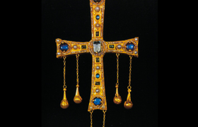

Lezione 5  Invasioni barbariche
Invasioni barbariche

I longobardi erano un popolo germanico di probabile origine scandinava, così chiamati dall’appellativo “lunghe barbe” con cui – secondo la leggenda – furono apostrofati dal dio Wotan prima di una battaglia. Quando nel 568 invasero l’Italia erano passati appena quindici anni dalla fine della lunga e devastante guerra greco-gotica: gli ostrogoti erano stati sconfitti e l’Italia era diventata una provincia dell’Impero bizantino. Quella dei longobardi fu una conquista semplice, perché l’Italia non si era ancora ripresa dalla guerra precedente. Fu disomogenea, perché, anche se guidati da Alboino, i longobardi erano divisi in bande con capi militari autonomi che agivano ciascuno per conto proprio, senza un coordinamento. E fu una conquista feroce e violenta, perché i longobardi erano meno romanizzati delle tribù precedenti e avevano come scopo principale il saccheggio e la razzia. Durante l’invasione i longobardi compirono numerose spoliazioni di beni ecclesiastici e di beni dei ricchi proprietari, e cancellarono completamente il vecchio ceto senatoriale. Conquistarono l’Italia “a macchia di leopardo”: occuparono prima il Nord, poi parte dell’Italia centro-meridionale, le regioni di Spoleto e Benevento. Ai bizantini rimasero l’area di Ravenna e Roma, la fascia costiera di Napoli, Amalfi, la Calabria, la Puglia, la Sicilia e la Sardegna. Dopo una prima fase di conquista devastante ci fu però, a partire dell’incoronazione del re Autari nel 590, una fase più pacifica, che vide i longobardi organizzarsi in modo unitario in una forma statale. Seguì il regno di Rotari, autore nel 643 dell’editto che per la prima volta raccoglieva in un testo scritto in latino le leggi longobarde. Infine, e a conferma della progressiva integrazione cui questo popolo andò incontro, tra il 680 e il 750 i longobardi si convertirono al cristianesimo.